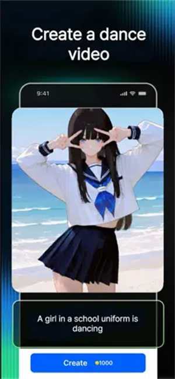

从零上手 AniFlow：三招做出像样的动漫内容
一个 AI 动漫生成工具的完整实战教程——文字生图、照片转动漫、口型同步视频，三个核心功能一步一步带你跑通。
这篇教程带你从零上手 AniFlow官网，写完你能用三种方式做出像样的动漫内容：写一句话生成动漫图、传一张照片变动漫、给一段视频加上能说话的口型同步。
准备：App 装起来就行
AniFlow 是一款跨平台的 AI 动漫创作工具，移动端和桌面端浏览器都能用。手机版体验最顺，建议先从官方下载装一个 App，再去 PC 端浏览器补复杂操作。不需要注册账号，打开就能用——部分高级功能可能要求登录，但基础生成完全免费。
设备方面，手机用近三年的主流机型都跑得动；PC 端浏览器版需要 Chrome 或 Edge，别用 Safari，WebGL 兼容性有坑。网络要稳，生成一次请求大概要 10 到 30 秒，断网等于白等。
装完之后打开 App，你会看到底部有三个 Tab：文字转、图片转、口型同步。我们就按这个顺序从易到难走一遍。
第一步：写一句话，让 AI 画出来
文字生成是 AniFlow 最直观的入口——敲一段描述，等几十秒，拿到一张动漫图。核心就两件事：prompt 写得具体和风格预设选得对。
写 prompt 的基本公式
别写「好看的动漫少女」这种空话。AniFlow 的模型对具体的物体、颜色、场景描述响应好，对模糊形容词没概念。按这个顺序拼就行：
主体（谁）+ 外貌细节 + 场景 + 风格 + 氛围
比如「银发蓝眼的少女剑士，白色和风战袍，夜晚樱花树下，吉卜力水彩风，柔和月光」——这是一个合格的 prompt。
中英文都支持，英文的细节还原度稍好一些，但中文写也够用。最重要的信息放开头或结尾，中间的词权重会被 AI 忽略。如果生成出来头发颜色不对，把颜色词挪到最前面；场景没出来，把场景描述拉长。

选对风格预设
AniFlow 内置了十来种动漫风格预设，吉卜力、赛博朋克、Q 版、复古 90s 动漫风都有。选对预设能省一半 prompt 的活。
举个例子：吉卜力风格的核心特征是柔和水彩质感、温暖色调、圆润人物比例、自然环境细节。选了这个预设之后，AI 会自动帮你处理色调、加背景元素（漂浮的云、微风吹动的草、远处的山丘）。这时候你的 prompt 里不用再说「吉卜力风格」，专注描述主体和氛围就行——重复风格词会稀释 prompt 里真正重要的信息。
风格选错了是新手最常见的翻车点。比如你想画赛博朋克的霓虹都市，却选了吉卜力预设，AI 再怎么努力也出不来硬核机甲的效果。不确定的时候，用同一段 prompt 换两三个风格试一下，哪个顺眼选哪个——生成不花钱，别犹豫。
实操一遍
打开 App → 切到「文字转」Tab → 在输入框敲 prompt → 选一个风格预设 → 点生成。等 15 秒左右，结果出来。不满意就改 prompt 里最靠前的几个词再生成一次，别整段推倒重写。
第二步：上传一张照片，变成动漫
图片转动漫不需要写 prompt，上传一张真实照片，AI 自动把主体转换成动漫风格。入口在底部「图片转」Tab。
哪些照片转换效果好
自拍照、宠物照片、风景照都能转。但照片质量直接决定效果——主体清晰、光线充足的照片转出来靠谱；模糊、逆光、主体占比太小的照片，AI 可能连主体都识别不准。
格式方面只支持 PNG、JPG、WEBP，单张最大 5 MB。一次只能传一张，批量操作不支持。
转换时能加 prompt
选完照片和风格预设之后，prompt 输入框仍然可以用——这时候的 prompt 是补充细节，比如你想让 AI 给这个人加猫耳、穿女仆装、换个发型，直接在 prompt 里写。
想让 AI 保留某个特定特征（比如眼镜、雀斑、橘猫的毛色），在 prompt 里明确提一下「保留眼镜」「橘色的毛不要变」。AI 转换不是精确描摹，它会做创造性改动，你不说它就敢瞎改。

实操一遍
切到「图片转」Tab → 点上传区域选照片 → 选风格预设 → 想加细节就写两句 prompt → 点生成。结果出来后仔细看一眼关键特征有没有保留住——没有的话改 prompt 重跑，比选风格重跑快。
第三步：给视频加口型同步
这是 AniFlow 最有意思的功能——你有一段动漫视频，想让角色开口说话？AI 会把音频和视频的口型对齐。核心步骤：准备音频和准备视频。
音频来源：录音或上传
两种方式：App 内置录音和外部音频文件上传。
内置录音最直接——切到口型同步面板，点「录制」按钮，按住说话，松手自动停止。录音会自动做降噪和音量归一化，不需要后期处理。录音时注意三点：安静的环境（远离风扇和空调噪音）、麦克风距离嘴巴 10~20 厘米（太近爆音，太远收不到声）、正常语速（太快或太慢 AI 会错位）。
如果有现成的音频文件（配音演员录音、AI 语音合成的音频都可以），直接上传。支持 MP3、WAV、M4A，大小不超过 10 MB。上传前做几个预处理效果会好很多：音量归一化让整段音量一致、降噪去掉背景音、截断开头结尾的长时间静音、音频时长尽量和视频匹配（视频 6 秒，音频控制在 6~6.5 秒左右）。更多音频参数和限制可以去AniFlow文档查。
视频准备
视频方面没有太多花活——准备一段动漫片段，MP4 格式就行，时长和音频对齐。选视频的时候注意：角色正脸出镜且嘴部清晰，侧脸太远或嘴被挡住 AI 识别不准。
实操一遍
切到口型同步功能 → 选视频（上传或从相册选）→ 录一段音频或上传 → 点开始处理 → 等结果。处理完 AI 会自动对齐口型和音频，预览满意就下载。
常见卡点和解法
跑一遍下来，大概率会遇到这几个问题，提前知道怎么解：
prompt 写了一大段但效果还是不对。 八成是优先级混乱。AI 对开头和结尾的词权重最高，中间的容易被忽略。把最重要的信息（主体、核心特征）移到开头或结尾，中间只放次要细节。
上传照片转换后没保留住关键特征。 AI 转换不是精确描摹，它会按动漫风格调整五官比例和细节。在 prompt 里明确写「保留 XX」——比如「保留眼镜」「保留橘色的毛色」。如果写了还是没效果，换一张特征更突出的照片重新上传。
口型同步对不上。 先查音频质量——有没有背景噪音、音量够不够、语速会不会太快。再查视频——角色是不是正脸、嘴部是不是清晰。都没问题的话，把音频裁短 0.5~1 秒再试，AI 对精确时长的容忍度有个浮动区间。
进阶一句话
三个基础功能跑通之后，可以试试风格混合——用文字生成时在 prompt 里加「吉卜力水彩质感 + 赛博朋克光影」，或者做一组风格统一的角色头像——同一张自拍换三四个风格预设出一套，比找画师画头像省太多事。